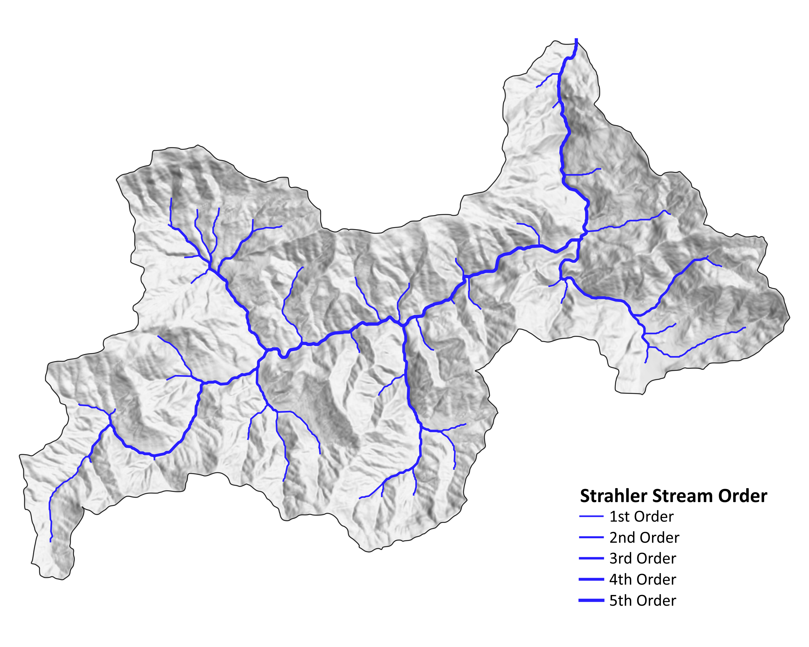
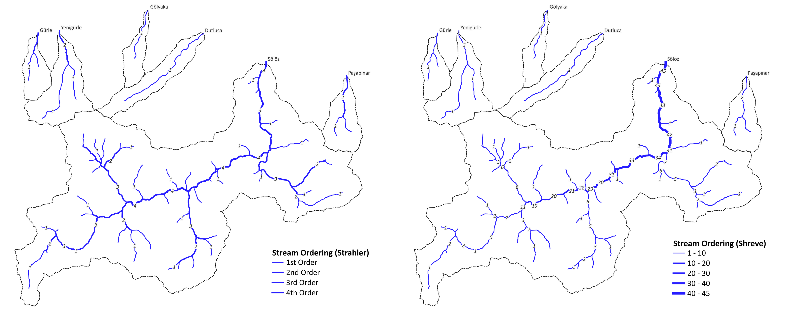
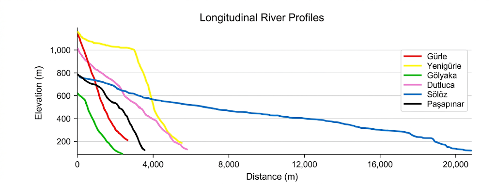
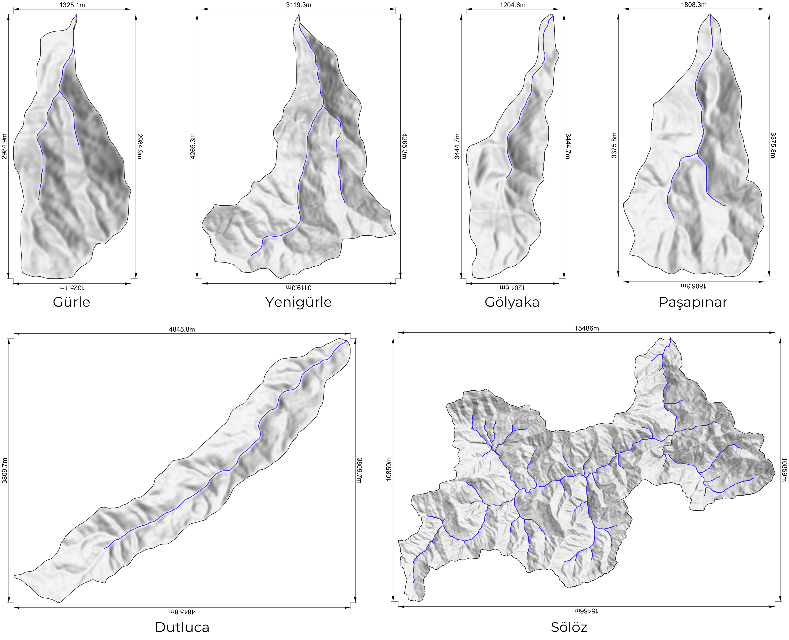
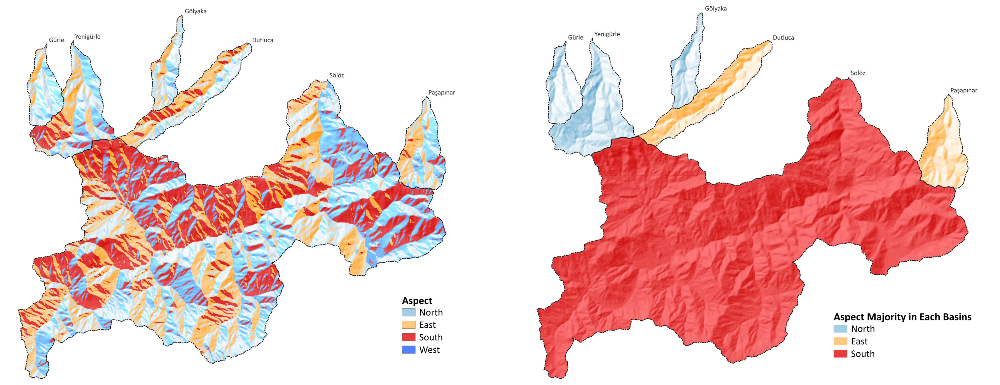
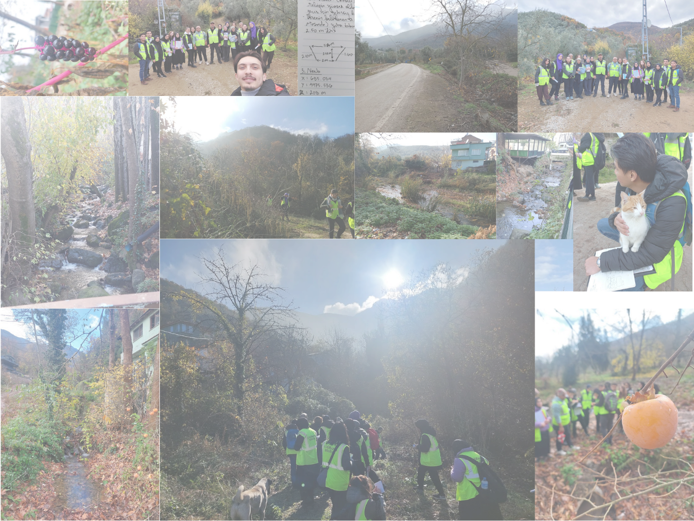

Hydro-geomorphological Risk Assessment
Applied Analysis of River Basins in the Southwestern Part of İznik Lake
Abstract
Six basins located in the southwest of Lake İznik were analyzed using DEM-based hydrology, field observation, and geomorphological interpretation. The study integrates terrain analysis (slope, aspect, stream ordering, longitudinal profiles) with field hydraulic measurement and structural-geologic context to evaluate hydro-geomorphological risk. The analysis identifies the Sölöz Basin as the most extensive and geomorphologically active system, and isolates the Gürle and Yenigürle basins as the principal sites of engineered flood risk, where channel constriction by built infrastructure sharply reduces conveyance capacity. The findings translate into basin-specific planning implications for flood mitigation, channel-capacity intervention, and sediment management.

1. The Study Area
Six basins in the southwest of Lake İznik were analyzed using DEM-based hydrology, field observation, and geomorphological interpretation.

1.1 Basin Structure
The study area ranges from 83 m to 1,280 m elevation, creating strong relief and active erosion processes. Among all basins, Sölöz stands out as the most extensive and geomorphologically active system.
2. The Sölöz Basin: A Mature and Integrated Drainage System
Sölöz reaches 5th-order (Strahler), indicating a highly developed drainage network with multiple tributaries and a large contributing area. Sediment transport operates across broader spatial scales, supported by a mature and continuous channel system.

The Sölöz main channel exhibits a wide range of sediment sizes, from fine clay particles to coarse cobbles and boulders, indicating a poorly sorted fluvial system. Bedload transport processes such as rolling, sliding, and saltation are actively shaping the channel, reflecting a relatively high-energy flow regime.
The clarity of the water during observation suggests that suspended load is not dominant at that moment, implying that sediment transport is primarily concentrated in the bedload fraction. However, this condition likely varies seasonally, particularly during peak discharge events.
The presence of large clasts within the channel indicates strong transport capacity during high-flow periods, likely associated with episodic discharge peaks rather than constant flow. This suggests that the Sölöz main channel operates under a dynamic regime where geomorphic work is concentrated during short-duration, high-intensity flow events.

3. Field Hydraulic Measurements
For each basin's main channel, cross-sectional area, mean flow velocity, and discharge were determined at the surveyed location. Discharge follows the continuity relation:
where $Q$ is discharge (m³/s), $A$ is cross-sectional area (m²), and $V$ is mean flow velocity (m/s).
| Main channel location | $A$ (m²) | $V$ (m/s) | $Q$ (m³/s) |
|---|---|---|---|
| Gürle | 9.00 | 8.94 | 80.47 |
| Yenigürle | 15.68 | 10.27 | 160.97 |
| Gölyaka | 17.09 | 11.04 | 188.53 |
| Dutluca | 14.18 | 8.97 | 127.10 |
| Sölöz | 113.43 | 7.83 | 887.95 |
| Paşapınar | 12.46 | 12.23 | 152.38 |
3.1 Cross-sectional Area of the Channel ($A$)
The cross-sectional area depends on the surveyed channel shape. In this field study, two idealized geometries were used: trapezoidal and square (rectangular).
Rectangular / square channel:
where $w$ is the channel (bed) width (m) and $d$ is the flow depth (m). For a square section, $w = d$.
Trapezoidal channel:
equivalently written using both bank slopes as
where $b$ is the bottom (bed) width (m), $d$ is the flow depth (m), $T$ is the top width of the water surface (m), and $z$ is the side-slope ratio (horizontal:vertical). The two forms are equivalent because $T = b + 2zd$.
3.2 Mean Flow Velocity ($V$) — Manning's Equation
where $R$ is the hydraulic radius (m), $S$ is the channel slope (dimensionless), and $n$ is the Manning roughness coefficient (s·m$^{-1/3}$).
3.3 Hydraulic Radius ($R$)
where $A$ is the cross-sectional area (m²) and $P$ is the wetted perimeter (m) — the length of channel boundary in contact with the water.
For the surveyed shapes, the wetted perimeter is:
4. Hydrological Behaviour
Higher-order basins integrate flow from multiple tributaries, resulting in more persistent discharge. Lower-order basins respond rapidly to rainfall, producing short but intense peak flows.

4.1 Flow Dynamics
Longitudinal profiles show steep gradients, especially in Gürle and Yenigürle, where elevation drops sharply over short distances.

5. Where Risk Emerges
Risk is not only natural. It is engineered.
5.1 Channel Constriction
In Gürle and Yenigürle, streams are locally narrowed by bridges and covered channels, reducing flow capacity and increasing flood risk. Field observations show channel-width reductions from over 15 m upstream to less than 6 m within settlement areas.

This section of Taban Stream in Gürle illustrates a critical interface between natural fluvial processes and built infrastructure. While the upstream channel retains a width of approximately 5.2 m, it is abruptly constricted to 1.8–2 m at bridge and culvert crossings within the Gürle settlement. Such artificial narrowing reduces hydraulic capacity and increases susceptibility to backwater effects, debris blockage, and localized flooding during peak-flow conditions. The site highlights how small-scale infrastructure decisions can significantly amplify flood risk in steep, responsive catchments.

The image sequence shows the main channel of Karanlık Stream in Yenigürle from upstream to downstream. The stream is approximately 15 m wide in the upstream section, but narrows to 7.2 m within the settlement and further to 5.7 m near the downstream bridge crossing. This reduction indicates a significant loss of conveyance capacity as the stream passes through built-up areas. Such progressive constriction — as in Gürle — increases the likelihood of backwater effects, overtopping, and localized flooding during high-flow events, especially where infrastructure and bank modifications interfere with the stream's natural geometry.

5.2 Flash-Flood Potential
Short basin length and steep slopes result in rapid runoff concentration, producing fast-rising water levels with limited warning time. High stream power can mobilize sediment and debris, further blocking culverts and bridges.

6. Slope & Tectonic Control
Basin morphology is influenced by the Avdan-Gürle and Gemlik fault systems, shaping slope distribution and drainage orientation.
6.1 Slope and Aspect (GIS Derivation)
Slope and aspect are first-order derivatives of the DEM surface, computed from the rate of change of elevation $z$ in the $x$ and $y$ directions. Let $\dfrac{\partial z}{\partial x} = f_x$ and $\dfrac{\partial z}{\partial y} = f_y$ be the partial derivatives of elevation, estimated from the 3×3 moving window around each cell.
Slope (steepest rate of change of elevation):
Expressed in degrees:
Expressed as percent rise:
Aspect (down-slope compass direction of the steepest descent), in degrees clockwise from north:
The raw result is converted to the 0–360° compass convention:
Cells with zero slope (flat) are assigned an aspect of −1.

6.2 Aspect & Microclimate
North-facing slopes are cooler and more humid, while Sölöz differs with east- and south-facing dominance, indicating warmer conditions and distinct surface processes.

7. Planning Implications
| Basin | Priority intervention |
|---|---|
| Gürle | High-priority flood mitigation. |
| Yenigürle | Channel-capacity intervention needed. |
| Sölöz | Large-scale sediment management. |
8. Brief Gallery
